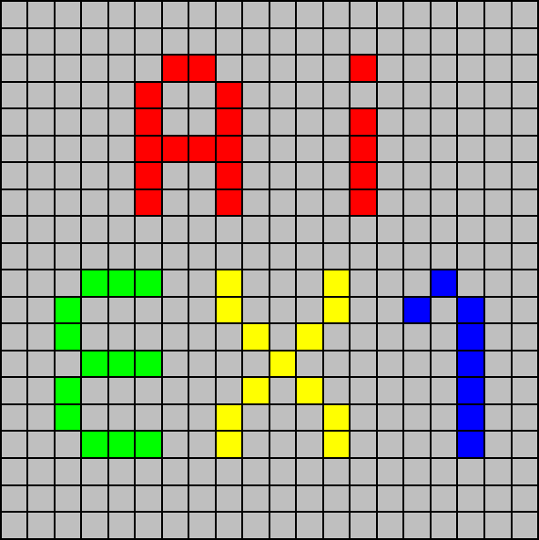

In this project you will write search algorithms for a simple game based on a game called Blokus. Please familiarizer yourself with the game online. You should read the
rules and you can play against each other or
computer players.
We have provided several puzzles based on the game, which you will solve using search algorithms.
The code for this project consists of several Python files, some of which you will need to read and understand in order to complete the assignment, and some of which you can ignore. You can download all the code and supporting files (including this description) as a zip archive.
| Files you'll edit: | |
search.py |
Where all of your search algorithms will reside. |
blokus_problems.py |
Where your problem definitions and helper functions will reside. |
| Files you might want to look at: | |
game.py |
Main game-running file. This file also allows you to watch a game of Blokus to get a feel for how it works. |
board.py |
Defines the board layout and rules, and holds some supporting definitions and classes. |
util.py |
Useful data structures for implementing search algorithms. |
| Supporting files you can ignore: | |
displays.py |
Graphics for Blokus |
inputs.py |
Contains a random player and an interface allowing human interaction. |
pieces.py |
Loads lists of game pieces from a file |
What to submit: You will fill in portions of search.py and blokus_problems.py during the assignment. You should submit these two files (only) and a README.txt as a zip file in the moodle website. Each team should submit exactly one file!
Evaluation: Your code will be autograded for technical
correctness. The autograder machine is running Python 3.4, don't use Python 2.7!
Please do not change the names of any provided functions or classes within the code, or you will wreak havoc on the autograder. The final grade will be calculated as follows: min{24, points}. Please make sure you follow the readme format exactly.
Academic Dishonesty: We will be checking your code against other submissions in the class for logical redundancy. If you copy someone else's code and submit it with minor changes, we will know. These cheat detectors are quite hard to fool, so please don't try. We trust you all to submit your own work only; please don't let us down. If you do, we will pursue the strongest consequences available to us.
Getting Help: You are probably not alone. Please post your questions via the General Discussion Forum on the course website. Please do not write to our personal e-mail addresses!
Readme format: Please submit a README.txt file. The README should include the
following lines (exactly):
python3 game.py
Implement the depth-first search (DFS) algorithm in the depth_first_search function in search.py. To make your algorithm complete, write the graph search version of DFS, which avoids expanding any already visited states (textbook section 3.5). Your code should quickly find a solution for:
python3 game.py -p tiny_set.txt -s 4 7 -z fill
The game will output the board states on the way to the solution your search found, step by step. You will also get the number of search nodes expanded and the solution cost. Does your solution use all the moves that were checked?
Your code should be general and work with any search problem. For example, Pacman maze navigation:
python3 pacman.py -a fn=dfs
Hint: If you use a Stack as your data structure, the solution found by your DFS algorithm for second problem should have a cost of 130 (if you push successors onto the fringe in the order provided by getSuccessors; you might get 246 if you push them in the reverse order). Is this a least cost solution? If not, think about what depth-first search is doing wrong.
Implement the breadth-first search (BFS) algorithm in the breadth_first_search function in search.py. Again, write a graph search algorithm that avoids expanding any already visited states. Test your code the same way you did for depth-first search.
python3 game.py -p tiny_set.txt -f bfs -s 4 7 -z fill
python3 pacman.py -a fn=bfs
Does BFS find the shortest path through pacman's maze? If not, check your implementation.
Hint: BFS takes longer and more memory than DFS for these problems. Have patience - the search could take several minutes.
Note: If you've written your search code generically, your code should work equally well for the eight-puzzle search problem (textbook section 3.2) without any changes.
python3 eightpuzzle.py
While BFS will find a fewest-actions path to the goal, we might want to find paths that are "best" in other senses. Consider a puzzle where we'd like to cover the corners of the board (introduced next): we would like a solution where the number of tiles placed is minimal, not just the number of moves. To do this, we will need to vary the cost function.
BlokusCornersProblem (2 points)
In BlokusCornersProblem (blokus_problems.py), there are three locations to cover, one in each corner (other than the starting location). Our new search problem is to find the most efficient way through the board to cover all four corners.
Note that you may place a tile on the board only if it touches at least one piece with only corner-to-corner contact allowed; edges cannot touch!
The cost of an action in this search problem is the size of the tile. That is, we want to cover all the corners while leaving the board as vacant as possible.
If you implemented the problem correctly, you should be able to run the following command:
python3 game.py -p tiny_set_2.txt -f bfs -s 6 6 -z corners
Implement the uniform-cost graph search algorithm in the uniform_cost_search function in search.py. We encourage you to look through util.py for some data structures that may be useful in your implementation.
You should now be able to find the minimal solution for the following problems:
python3 game.py -p tiny_set_2.txt -f ucs -s 6 6 -z corners
python3 game.py -p small_set.txt -f ucs -s 5 5 -z corners
Note: The run time for the corners covering problems is very long. We can do better by choosing which moves to try first - see the next question. However, you can check that the solutions found have lower cost than the ones found by DFS and BFS.
Implement A* graph search in the empty function a_star_search in search.py. A* takes a heuristic function as an argument. Heuristics take two arguments: a state in the search problem (the main argument), and the problem itself (for reference information). The nullHeuristic heuristic function in search.py is a trivial example. Use it to test your A* search:
python3 game.py -p tiny_set_2.txt -f astar -s 6 6 -z corners -H null_heuristic
The real power of A* will only be apparent with a more challenging search problem. Now, it's time to formulate new problems and design heuristics for it. You've already written BlokusCornersProblem- now write a heuristic for it:
Implement a heuristic for the BlokusCornersProblem in blokus_corners_heuristic (blokus_problems.py).
Grading: inadmissible heuristics will get no credit. 1 point for any admissible heuristic.
The other 3 point will be awarded based on how many nodes your heuristic expands. The top 40% submissions will receive full credit; the next 35% will get 3 points and the other submissions will be awarded with 2 points.
python3 game.py -p tiny_set_2.txt -f astar -s 8 8 -z corners -H blokus_corners_heuristic
The next problem that you will define is BlokusCoverProblem in blokus_problems.py. This problem is similar to BlokusCornersProblem, while this time the goal is to cover all given locations (targets argument).
As before, your agent should find a solution that leaves the board as vacant as possible.
BlokusCoverProblem (2 points) Fill in the missing parts of BlokusCoverProblem in blokus_problems.py
python3 game.py -p small_set.txt -f astar -s 6 6 -H null_heuristic -z cover -x 3 3 "[(2,2), (5, 5), (1, 4)]"
Implement a heuristic for the BlokusCoverProblem in blokus_cover_heuristic. Grading: inadmissible heuristics will get no credit. 1 point for any admissible heuristic, A consistency heuristic will get another one points.
The other 4 points will awarded based on the performance of your heuristic compared to your classmates.
python3 game.py -p small_set.txt -f astar -s 10 10 -H blokus_cover_heuristic -z cover -x 3 3 "[(2,2), (5, 5), (6, 7)]"
Implement the ClosestLocationSearch in blokus_problems.py. That, is you should implemente the solve method in ClosestLocationSearch.
You may edit the class constructor and add methods as you wish.
python3 game.py -p valid_pieces.txt -s 10 10 -z sub-optimal -x 7 7 "[(5,5), (8,8), (4,9)]"
python3 game.py -p valid_pieces.txt -s 10 10 -z sub-optimal -x 5 5 "[(3,4), (6,6), (7,5)]"
Hint: Your ClosestLocationSearch won't always find the minimal tile solution (If you don't understand why, ask a GSI!) In fact, you can do better if you try.
Note: Our program is able to solve these problems in under a ten seconds, expanding 21 nodes for the first and 23 nodes for the second (total nodes over all subgoal searches). However, the cost of the solutions was 9, where a score of 6 is possible.
Implement an MiniContestSearch in blokus_problems.py,
that finds an optimal solution. The two teams that find the optimal solution using no more than 30 seconds of computation will receive 2 extra credit points, the third and fourth teams will receive 1 extra point.
python3 game.py -p valid_pieces.txt -s 15 15 -z mini-contest "[(0,1),(0,9),(5,5), (8,8), (4,9),(9,2)]"
We will time your agent, and it must complete in under 30 seconds on the Aquarium's machines. Please describe what your agent is doing at the README file! We reserve the right to give additional extra credit to creative solutions, even if they don't work that well or take more than 30 seconds.
Good Luck!